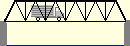
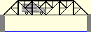
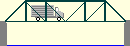
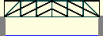
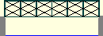

How to design a bridge
How to design a bridge
How to design a bridge
 Go back one step
Go back one step
 Go forward one step
Go forward one step
Design is inherently an iterative process. To achieve a truly optimal design, you will probably need to try many different truss configurations. As you might guess, however, there are millions of possible configurations, and you probably won't have time to try them all! How can you find the optimum, without modeling and testing every possible truss configuration? One approach is to consider alternative configurations in a very systematic way. Select a configuration, optimize its , and carefully observe how changes in the configuration affected the cost of your design. Keep track of which changes produce reductions in cost and which do not. Then use these observations to guide the selection of your next alternative configuration.
For example, let's start with a standard Warren Through Truss:

Because the top of a simple-span truss bridge are always in compression, we might be able to reduce the cost of the Warren truss by subdividing its top chord members, like this:

Now consider a standard Pratt Through Truss:

In this configuration, the top chords and the are normally in compression. Thus, we could subdivide both the top chords and the verticals, like this:

Note that, in both examples, the length of each compression member is reduced by half. This reduction in length will usually allow the designer to use a substantially smaller to achieve the required compressive strength.
Note also that, when you subdivide a member, you will always need to add additional and members to maintain the stability of the truss. To be stable, a truss generally must be made up of a series of interconnected triangles.
To subdivide a compression member in the Bridge Designer 2016, you must:
Reducing the length of compression members may or may not reduce the total cost of your design, depending on whether the cost saving from using smaller member sizes is enough to offset the increased cost of the additional joints and members.
For example, consider the standard Howe Deck Truss:

This configuration can be improved by simply removing the joint at the midpoint of the bottom chord, like this:

When you delete this joint, all three attached members will be deleted as well. You will need to add a single new member to replace the two bottom chord members you deleted.
This modification is often effective for members (like the bottom chord members in the example above), because tensile strength is not a function of length. However, removing a joint from the top chord of a truss, as shown below, is less likely to be effective.

By deleting a top chord joint and replacing two chord members with one, you would double the length of a compression member, making it much weaker. You would need to use a substantially larger member size to make this member strong enough to pass the . Thus any benefit from the reduced number of joints would probably be lost.


Recognize that each of these could also be designed as a .